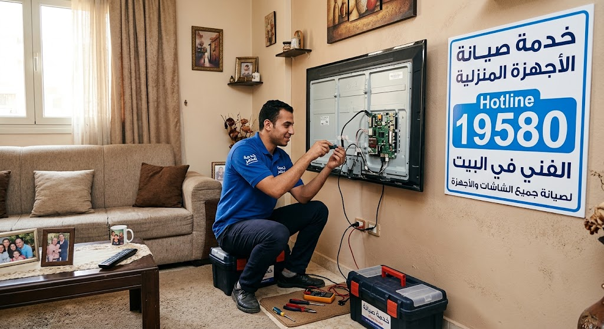
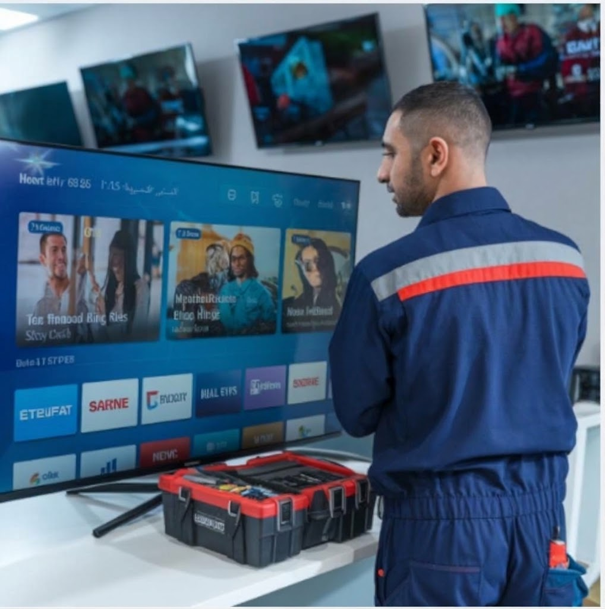
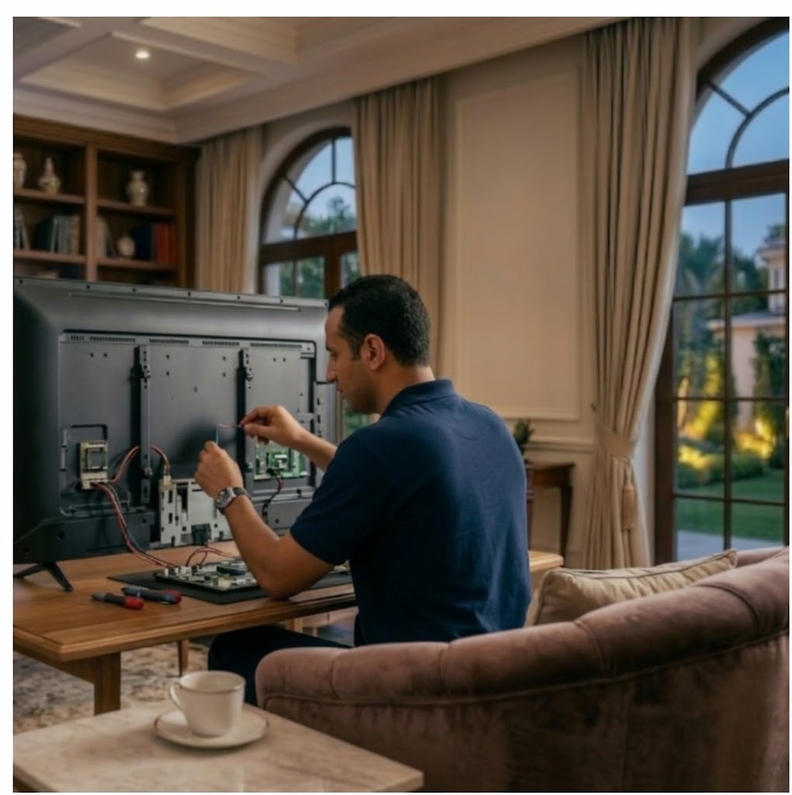

صيانة شاشات سوني في مصر - خبراء صيانة الشاشات في مصر
تتميز شاشات سوني بجودة التصنيع اليابانية والوضوح العالي، ولكن مع الاستخدام المستمر أو تذبذب التيار الكهربائي قد تظهر بعض الأعطال الشائعة. في خبراء صيانة الشاشات في مصر، بنقدملك خدمة صيانة شاشات سوني شاملة لجميع الفئات بقطع غيار أصلية وضمان معتمد.
إزاي شاشة سوني بتشتغل؟
ترتبط المكونات الداخلية لشاشة سوني معاً عبر نظام التشغيل واللوحة الرئيسية بوردة الطاقة. يقوم مهندسونا المتخصصون بفحص الشاشة بأحدث أجهزة القياس وشحن فلاشات سوني لضمان تشخيص العطل وإصلاحه بدقة متناهية. رابعاً: الفروع والتغطية الجغرافية في مصر إذا كنت تسأل: "أصلح شاشة سوني فين؟" أو "عنوان توكيل شاشات سوني فين؟" أو تبحث عن أقرب مركز صيانة شاشات سوني أو مركز تصليح شاشات سوني قريب مني، تتوفر الخدمات في المحافظات التالية: القاهرة الكبرى والمدن الجديدة: صيانة شاشات سوني بالقاهرة مع إتاحة رقم صيانة سوني للشاشات بالقاهرة الكبرى. توكيل سوني للشاشات بمدينة نصر. صيانة شاشات سوني التجمع الخامس. محافظة الجيزة: مركز صيانة شاشات سوني الجيزة. مركز صيانة تلفزيونات سوني في الهرم. محافظات الدلتا والقناة: توكيل شاشات سوني الإسكندرية. صيانة شاشات سوني طنطا. صيانة شاشات سوني المنصورة. صيانة شاشات سوني الشرقية. صيانة شاشات سوني الإسماعيلية. تصليح شاشات سوني بالمحافظات. خامساً: مميزات خدمة الصيانة المنزلية والضمان عند اختيارك لـ شركة تصليح شاشات سوني معتمدة أو مركز صيانة شاشات سوني معتمد رسمي، تتلقى العديد من المزايا الخدمية: صيانة شاشات سوني بالمنزل بدون نقل: يقوم فني صيانة شاشات سوني في أجهزة البيت بزيارتك لفحص وتصليح الجهاز في المكان دون الحاجة لنقله، مما يحمي الشاشة من خطر الكسر أثناء النقل. صيانة شاشات سوني بالضمان المعتمد: يتم توفير ضمان مكتوب على جميع العمليات والقطع المبدلة. قطع غيار شاشات سوني الأصلية: ضمان التوافق التام مع الجهد الكهربائي ومكونات الجهاز. أسعار مناسبة وخيارات متعددة: إتاحة خيارات اقتصادية تجعله أرخص مركز صيانة شاشات سوني يجمع بين جودة الصيانة والتكلفة المناسبة. سرعة الاستجابة: تقديم صيانة شاشات سوني الفورية وتوفير خدمة صيانة شاشات سوني 24 ساعة لتلبية الحالات الطارئة. سادساً: طرق التواصل وطلب الدعم الفني لكل من يتساءل: "عايز رقم صيانة شاشات سوني" أو "مين بيصلح شاشات سوني بسرعة؟"، يمكن التواصل عبر قنوات الدعم المباشرة: الخط الساخن ورقم الصيانة: يمكنك الاتصال على رقم صيانة شاشات سوني الموحد، أو استخدام رقم صيانة سوني للشاشات الخط الساخن وتلقي الدعم عبر رقم مجمع صيانة شاشات سوني. خدمة العملاء والبلاغات: تستقبل خدمة عملاء شاشات سوني ورقم خدمة عملاء سوني للشاشات كافة بلاغات عيوب شاشات سوني وتسجيلها على رقم شكاوى وعيوب شاشات سوني لضمان المتابعة الدورية. التواصل للتوكيل والصيانة المباشرة: من خلال رقم توكيل شاشات سوني وتوفير خدمات توكيل شاشات سوني صيانة وإصلاح الفورية عبر مهندس صيانة شاشات سوني منزلي. سابعاً: المصطلحات الفنية والخدمات باللغة الإنجليزية (Technical & Search Terms) لتسهيل الوصول للخدمات عبر مختلف محركات البحث والاستعلامات الدولية، يتم تقديم خدمات مخصصة تشمل: Services: Sony TV repair service Egypt, Sony screen maintenance center, Authorized Sony TV service center. Search queries: Sony LED TV repair near me, Sony smart TV maintenance hotline, Sony TV customer service number. Technical fixes: Sony LED backlight repair, Sony TV power board repair, Sony panel repair Cairo, Sony TV black screen fix, Sony smart TV troubleshooting. Spare parts: Sony screen spare parts Egypt. Transliteration Terms: Soyanat shashat Sony, Taslih shashat Sony, Tawkil shashat Sony. ثامناً: نصائح مهمة للحفاظ على شاشة سوني من الأعطال استخدام مشترك معالج للتيار (Surge Protector): لحماية دوائر الباور والمين بورد من الارتفاع المفاجئ في التيار الكهربائي عند انقطاعه وعودته. ضبط درجة السطوع والإضاءة (Backlight): تجنب تشغيل الشاشة على أقصى درجة سطوع طوال الوقت، حيث يساعد ضبط السطوع المتوازن في إطالة عمر مساطر الليد. التنظيف السليم: احرص على استخدام قطعة قماش خالية من الوبر (Microfiber) مسحوب عليها كمية بسيطة جداً من منظف الشاشات المخصص، وتجنب رش أي سوائل مباشرة على زجاج الشاشة. تهوية الجهاز: تأكد من وجود مسافة كافية خلف الشاشة للسماح بالتهوية وطرد الحرارة الناتجة عن التشغيل. الأسئلة الشائعة (FAQ) س: كيف يمكن تسجيل طلب صيانة لشاشة سوني؟ يمكنك الاتصال بـ رقم خدمة عملاء سوني للشاشات أو عبر الخط الساخن شاشات سوني وتحديد نوع العطل وموديل الشاشة، وسيقوم الفني بالتوصل معك لترتيب موعد الزيارة المنزلية. س: هل يتم تغيير مساطر الليد بالمنزل؟ نعم، يتم توفير خيارات تصليح تلفزيون سوني بالمنزل أو داخل ورشة تصليح شاشات سوني المجهزة بحسب طبيعة العطل لضمان الحصول على صيانة شاشات سوني مضمونة. خاتمة تضمن لك الصيانة الاحترافية والدورية المحافظة على كفاءة شاشة سوني واستعادة دقة ووضوح الصورة كما كانت في حالة الشراء الأولى. انتبه دائماً للتعامل مع الفنيين المتخصصين واستخدام قطع الغيار الأصلية لحماية أجهزتك المنزلية لسنوات طويلة.
خطوات صيانة شاشات سوني في خبراء صيانة الشاشات في مصر
عملية الصيانة عندنا بتمر بمراحل منظمة عشان نضمنلك أفضل نتيجة
الفحص المبدئي المهندس بيعمل فحص شامل لشاشة سوني واختبار كروت الباور والمين بورد وأكواد الخطأ بالنظام (وميض اللمبة الحمراء).
تحديد التكلفة بعد التشخيص الدقيق، بنبلغك بالتكلفة المطلوبة وقطع الغيار التي تحتاج تغيير قبل البدء.
الإصلاح بنستخدم قطع غيار سوني أصلية ومعدات شحن الفلاشات واللحام الحديثة للتعامل مع المكونات.
الاختبار بنشغل الشاشة ونختبر ألوانها والتطبيقات للتأكد من عودة الشاشة لكفاءتها الأصلية.
الضمان بنقدملك شهادة ضمان معتمدة على كافة قطع الغيار المستبدلة لأمانك لراحة بالك.
أسعار صيانة شاشات سوني
أسعارنا تنافسية وبتختلف حسب حجم الشاشة (من 32 بوصة حتى 85 بوصة) ونوع العطل (سواء تغيير مساطر ليد سوني أصلية، أو شحن فلاشة، أو إصلاح بوردة الباور). بنقدملك سعر شفاف ومناسب قبل بدء العمل.
أسئلة شائعة عن صيانة شاشات سوني
ما سبب وميض اللمبة الحمراء في شاشة سوني؟ يدل على دخول الشاشة في وضع الحماية بسبب مشكلة في الإضاءة أو دوائر الطاقة، ويتم فحصها بواسطة فني متخصص.
ما سبب تكرار إعادة فتح الشاشة على شعار سوني؟ عطل معروف في برمجيات النظام (Android/Google TV) أو الذاكرة الداخلية للمين بورد ويحتاج إعادة شحن أو برمجة.
هل يتوفر تصليح شاشات سوني بالمنزل؟ نعم، نوفر خدمة صيانة منزلية فورية لمعظم أعطال الليدات، الباور، والسوفت وير.
تواصل معنا دلوقتي
لو شاشة سوني بتاعتك فيها أي مشكلة، متتأخرش وكلمنا فوراً. فريق خبراء صيانة الشاشات في مصر جاهز لمساعدتك في أي وقت. اتصل بينا على 01289966660 أو الخط الساخن 19580 واحجز موعد صيانة جهازك.
ماركات الشاشات التي نصلحها بجانب سوني
نتعامل مع جميع الماركات العالمية بقطع غيار أصلية
الأسئلة الشائعة عن صيانة شاشات سوني
ما سبب توقف شاشة سوني وإعادة التشغيل تلقائياً (Boot Loop)؟
يرجع ذلك غالباً لعطل في السوفت وير الخاص بنظام Android TV أو السعة التخزينية المدمجة.
هل يمكن تصليح شاشة سوني في المنزل؟
نعم، معظم أعطال الليدات، الباور سبلاي، وتحديثات النظام يتم إصلاحها فوراً في المنزل.
كم تكلفة صيانة وإصلاح شاشات سوني؟
تختلف التكلفة حسب نوع العطل، حجم الشاشة، وسعر قطعة الغيار الأصلية المطلوبة.
ما سبب ظهور خطوط ملونة على شاشة سوني؟
حدث ذلك بسبب مشكلة في فلاتات البانل أو كابل التوصيل، ويتم فحصها بدقة.
ما سبب عدم اتصال شاشة سوني بالواي فاي؟
قد يرجع ذلك لخلل في إعدادات الشبكة أو تلف قطعة كارت الواي فاي الداخلي بالشاشة.
هل يمكن تحديث متجر Google Play إذا توقف عن العمل؟
نعم، يتم ضبط إعدادات الدولة أو عمل إعادة ضبط مصنع للسوفت وير أو شحن الفلاشة.
ما سبب انطفاء الشاشة المفاجئ مع تكرار وميض اللمبة الحمراء؟
يدل وميض لمبة الباور في سوني على دخول الشاشة في وضع الحماية بسبب مشكلة بدائرة الطاقة أو الإضاءة.
متى يجب عليك الاتصال بمركز الصيانة فوراً؟
عند تكرار إعادة التشغيل تلقائياً، اختفاء الصورة تماماً، أو ظهور ألوان غير طبيعية.
هل تتوفر قطع غيار أصلية لشاشات سوني؟
نعم، نوفر قطع غيار أصلية ومساطر ليد وكروت مين بورد وكروت واي فاي لشاشات سوني بمصر.
كيف أطلب خدمة صيانة لشاشة سوني الخاصة بي؟
يمكنك التواصل معنا مباشرة عبر الخط الساخن 19580 أو أرقام الصيانة الموضحة لتسجيل الطلب.
دليل صيانة شاشات سوني
أعطال شاشات سوني الشائعة ← 9 مشاكل والحل مع فني صيانة
| العطل | السبب المحتمل | الحل / الإجراء |
|---|---|---|
| الشاشة تعيد التشغيل باستمرار على اللوجو | • تلف السوفت وير • عطل بذاكرة eMMC • مشكلة بمسارات البانل | • فصل الكهرباء وإعادة التجربة ⚠️ إعادة شحن الفلاشة أو برمجة اللوحة |
| الصورة مائلة للون الأزرق أو البنفسجي | • تلف مساطر ليد سوني • تغيير الخصائص الضوئية لليدات | • ضبط الألوان مبدئياً ⚠️ تغيير طقم مساطر ليد أصلية بالكامل |
| الشاشة شغالة صوت بس مفيش صورة | • تلف مساطر الليد (Backlight) • عطل بوردة الطاقة Power Board | • اختبار الشاشة بكشاف ضوئي ⚠️ استبدال مساطر الليد أو دائرة الانفرتر |
| وميض اللمبة الحمراء وعدم فتح الشاشة | • تفعيل وضع الحماية (Protection) • تلف مكثفات دائرة الطاقة | • فحص كابل التغذية والفيوز ⚠️ صيانة بوردة الباور أو المين بورد |
| توقف التطبيقات أو بطئها | • امتلاء الذاكرة المؤقتة • الحاجة للتحديث الرسمى | • مسح الذاكرة وإعادة ضبط المصنع ⚠️ تحديث النظام أو شحن الفلاشة |
| عدم الاتصال بالشبكة (الواي فاي) | • مشكلة بالراوتر • تلف كارت Wi-Fi سوني الداخلي | • إعادة تشغيل الراوتر ⚠️ استبدال كارت الواي فاي الداخلي بالشاشة |
| ظهور خطوط ملونة عمودية على الشاشة | • عطل كابل T-Con Ribbon • تلف فلاتات البانل | • فحص التوصيلات الخارجية ⚠️ صيانة كارت T-Con أو البانل |
| توقف منافذ HDMI عن العمل | • تلف كابل HDMI • شحنة كهربائية زائدة أتلفت الشريحة | • تجربة منفذ أو كابل آخر ⚠️ صيانة أو استبدال شريحة HDMI بالمين بورد |
| الصوت مكتوم أو فيه تشويش | • تلف السماعات الداخلية • خلل بـ IC الصوت | • التأكد من إعدادات الصوت ⚠️ استبدال السماعات أو صيانة دائرة الصوت |
أبرز مشاكل الشاشات الشائعة
نقدم حلولاً جذرية وفورية لكافة الأعطال الفنية والتقنية لشاشات العرض الحديثة

صيانة شاشة سوني بالضمان
- أهمية شهادة الضمان المرفقة مع الشاشة بعد الإصلاح لا تقل أهمية عن الصيانة نفسها.
- تعتبر تعهد من مركز صيانة شاشات سوني بأن الشاشة ستعمل بكفاءة.
- نحن نضمن كافة الأجزاء المستبدلة والالتزام بإصلاحها فوراً حال حدوث أي خلل.
- تتراوح مدة الضمان عادة بين 3 شهور إلى 12 شهراً.
- المركز ملزم بتقديم كافة أعمال الخدمة مجاناً طوال فترة الضمان.

تصليح شاشات بالمنزل
- إذا كنت تفضل تصليح الشاشة بمنزلك نوفر لك السيارات المجهزة.
- مجهزة بأحدث معدات كشف الأعطال وقطع الغيار بنسبة كبيرة.
- حرص كامل على إتمام كافة أعمال الصيانة بنفس الموقع لراحتك.
- نغطي كافة المحافظات والمدن بفروعنا المتعددة للوصول السريع.

سرعة اصلاح الشاشة
- وصول المهندس السريع إليك يقلل من وقت تعطيل شاشتك.
- نمتلك أحدث الأجهزة لتقييم وفحص الشاشة وإصلاحها بأعلى سرعة.
- سيارات الصيانة المنزلية تضمن الخدمة السريعة العاجلة بكافة المحافظات.
- فريقنا ملتزم تماماً بالاحترافية الميدانية لتحقيق رضاك.
شرح الرسائل التحذيرية لشاشات سوني وكيفية حلها
| الرسالة التحذيرية | السبب المحتمل | الحل / الإجراء |
|---|---|---|
| No Signal / Check Cable Connection | الشاشة لا تستقبل إشارة / مصدر إدخال خاطئ. | • التأكد من كابل HDMI/AV • ضبط المصدر من الريموت ⚠️ فحص منفذ الشاشة |
| Not Supported Mode | دقة أو معدل تحديث الجهاز المتصل أعلى من دعم الشاشة. | • ضبط دقة العرض إلى 1080p أو 60Hz ⚠️ فحص دوائر الاستقبال بالمركز |
| HDCP Error / Connection Issue | فشل التشفير الرقمي بين الشاشة والجهاز الخارجي. | • إعادة توصيل الكابل • استخدام كابل معتمد ⚠️ فحص شريحة HDCP بالمين بورد |
| Network Cable Disconnected / Wi-Fi Error | انقطاع الإنترنت / مشكلة بكارت الواي فاي. | • إعادة تشغيل الراوتر • تعديل الـ DNS إلى 8.8.8.8 ⚠️ استبدال قطعة الكارت الداخلي |
| USB Device Overload / Not Recognized | سحب تيار عالي أو صيغة غير مدعومة. | • تهيئة الفلاش بصيغة FAT32 ⚠️ فحص دائرة تغذية منفذ USB |
| Retail Mode Active / Store Demo | الشاشة مضبوطة على الوضع التجاري للمعرض. | • التحويل إلى وضع Home Use من الإعدادات ⚠️ إعادة ضبط مصنع كاملة |
| Auto Power Off / Sleep Timer Active | تفعيل خاصية توفير الطاقة أو مؤقت النوم. | • تعطيل الإيقاف التلقائي من القائمة ⚠️ فحص لوحة الطاقة إذا تكرر الإغلاق |
| Software Update Error / Retry Later | انقطاع اتصال الإنترنت أثناء التحديث. | • إعادة التحديث يدوياً من USB ⚠️ عمل شحن فلاشة يدوياً (Manual Flash) |
| PIN Incorrect / System Lock | تفعيل قفل الشاشة أو الأبوة ونسيان الرمز. | • إدخال الرمز الافتراضي (0000) ⚠️ ضبط مصنع شامل بالمركز |
| Weak Signal or No Signal (TV Antenna) | ضعف إشارة الدش الداخلي أو كابل الريسيفر. | • إعادة ضبط القنوات وفحص التوصيلات ⚠️ فحص كارت التيونر الداخلي |
كيف تحجز موعد صيانة شاشة بمنزلك
قم بالاتصال الهاتفي على رقم هاتف صيانة شاشات مصر المخصص لاستقبال بلاغات الأعطال 19580.
حاول تحديد المشكلة التي تواجهها بشكل واضح لتجهيز الأدوات وقطع الغيار اللازمة قبل الوصول إليك.
عليك معرفة أسعار الفحص المنزلي للشاشة المحددة بحسب المسافة والمحافظة.
اسأل عن تكاليف صيانة جهازك المحتملة لتجنب أي مفاجآت غير متوقعة.
يجب تقديم كافة التفاصيل ورقم طراز شاشة سوني لتسهيل عملية الإصلاح.
التحقق من أوراق الضمان الخاصة بجهازك للتأكد من تغطية تكاليف الخدمة.
بعد تحديد الموعد يتم إرسال فني متخصص من قسم تصليح الشاشات بالمنزل المجهز لخدمتك خلال 24 ساعة.
💡 الموقع الإلكتروني خيار ممتاز لحجز الصيانة دون الحاجة للانتظار على الخطوط الهاتفيّة.
💡 يمكنك التوجه لأقرب فرع صيانة متواجد في محافظتك.
💡 موظفو مركزنا يعملون باستمرار لتقديم الخدمة الأفضل لك ولجهازك.